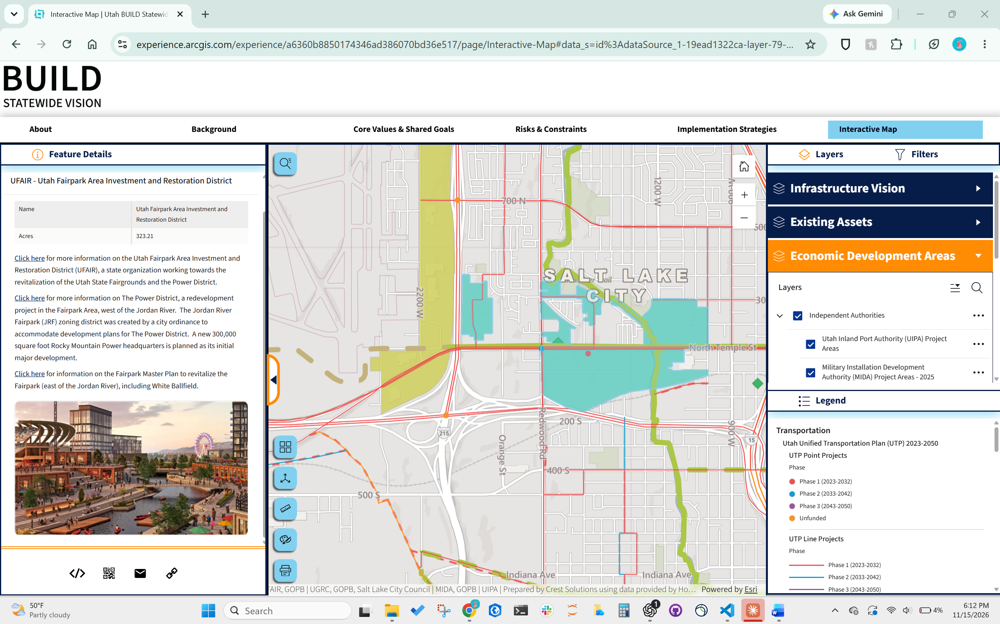
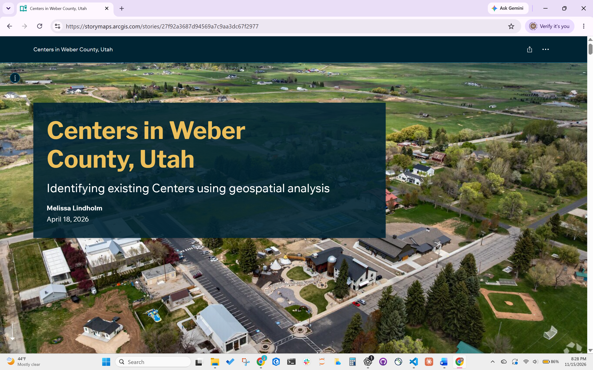
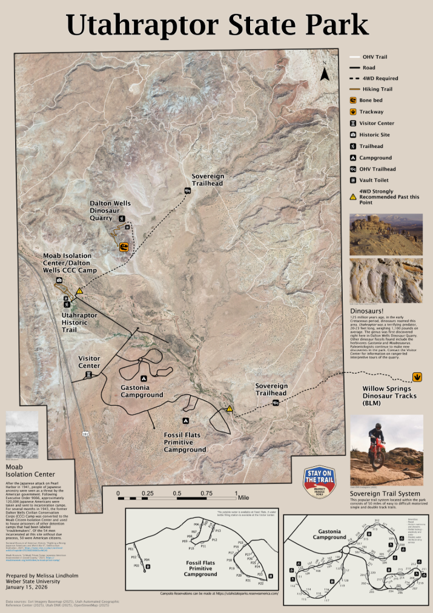
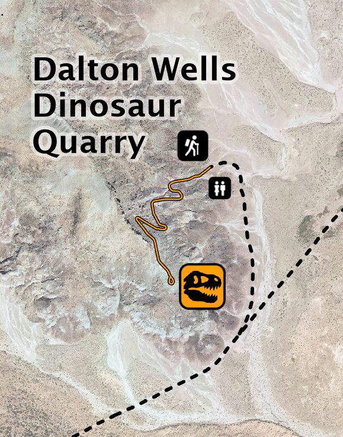
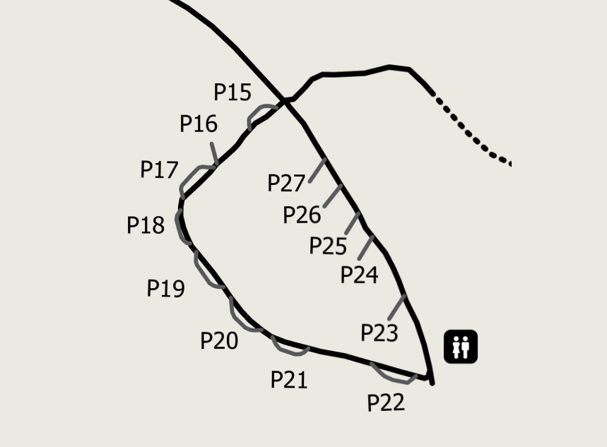

My Portfolio
Explore my work in cartography, spatial analysis, and the design and configuration of GIS web applications.

BUILD: Utah’s Statewide Vision
Using ArcGIS Experience Builder, I created this web app for the Utah Governor’s Office that makes the BUILD Coordinating Council’s long-range strategic plan for Utah accessible to the public. This map brings planning data from diverse sources into one place, helping planners, project managers, and decision-makers understand how their projects connect and overlap. Members of the public can also explore projects planned for their communities, draw features on the map, and print annotated maps to share with legislators and others—making it easier to communicate their questions, ideas, and concerns.

Centers in Weber County, Utah
I created this ArcGIS Storymap for a course at Weber State University, to present a geospatial analysis identifying potential "centers" in Weber County. Following in the footsteps of the Wasatch Front Regional Council and Mountainland Association of Governments and their Wasatch Choice Vision Map, one of the goals of the Governor's BUILD Initiative is to identify centers statewide to aid in infrastructure and land use planning. Density-Based Spatial Clustering of Applications with Noise (DBSCAN) analysis on Points-of-Interest (POIs) could be used as a first step toward identifying existing centers in urban as well more rural communities. This analysis is only meant to be used as a rough guide to where centers may already exist; actual center boundaries must be defined by local communities.

Utahraptor State Park Map
I created this poster-size map for a Cartography course at Weber State University and presented it at the 2027 Maps on the Hill event as well as the April 2026 Weber State University Research and Engagement Symposium. At the time, there were no accurate and comprehensive maps available online of Utah's newest state park that reflected the new roads and amenities as well as the closure of prior roads to funnel traffic to the entrance station. I sought to emphasize the park's attractions, new amenities, and current roads, while suppressing roads which have been gated to restrict access and the off-road vehicle trails which are still a major attraction but pre-date the park's opening.

